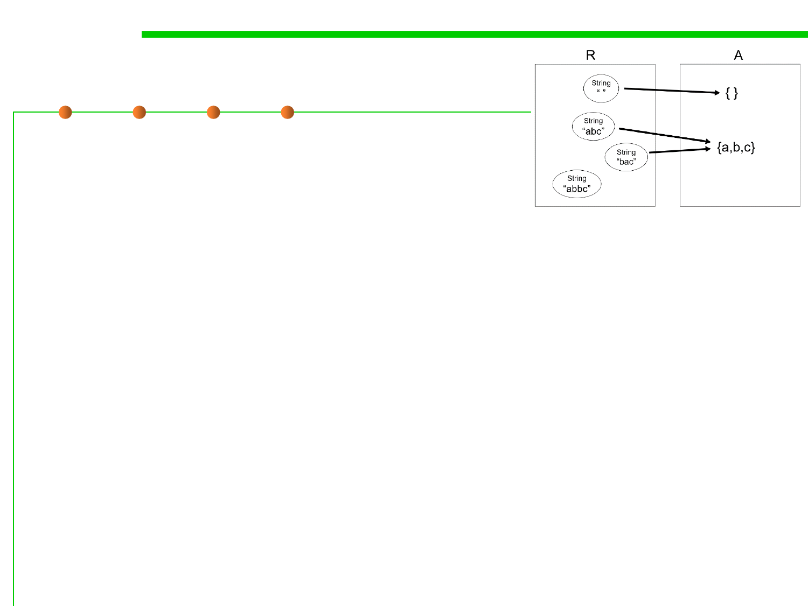

Mapping between R and A
3.3 Abstract Data Type (ADT)
▪ Every abstract value is mapped to by
some rep value (surjective, 满射).
– The purpose of implementing the abstract type is
to support operations on abstract values. Presumably, then, we will need
to be able to create and manipulate all possible abstract values, and they
must therefore be representable.
▪ Some abstract values are mapped to by more than one rep
value (not injective, 未必单射).
– This happens because the representation isn’t a tight encoding. There’s
more than one way to represent an unordered set of characters as a string.
▪ Not all rep values are mapped (not bijective, 未必双射).
– In this case, the string “abbc” is not mapped. In this case, we have decided
that the string should not contain duplicates. This will allow us to
terminate the remove method when we hit the first instance of a particular
character, since we know there can be at most one.